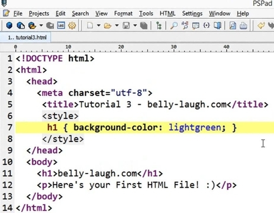

CSS Introduction
What is CSS?
- CSS stands for Cascading Style Sheets
- CSS describes how HTML elements are to be displayed on screen, paper, or in other media
- CSS saves a lot of work. It can control the layout of multiple web pages all at once
- External stylesheets are stored in CSS files
- CSS is independent of HTML and can be used with any XML-based markup language.
Why Use CSS?
CSS is used to define styles for your web pages, including the design, layout and variations in display for different devices and screen sizes.
CSS Solved a Big Problem
HTML was NEVER intended to contain tags for formatting a web page!
HTML was created to describe the content of a web page, like:
<h3>This is a heading</h3>
<p>This is a paragraph.</p>
When tags like <font>, and color attributes were added to the HTML 3.2 specification, it started a nightmare for web developers. Development of large websites, where fonts and color information were added to every single page, became a long and expensive process.
To solve this problem, the World Wide Web Consortium (W3C) created CSS.
CSS removed the style formatting from the HTML page!
CSS Saves a Lot of Work!
The style definitions are normally saved in external .css files. With an external stylesheet file, you can change the look of an entire website by changing just one file
Three Ways to Insert CSS
There are three ways of inserting a style sheet:
- External style sheet
- Internal style sheet
- Inline style
External Style Sheet
With an external style sheet, you can change the look of an entire website by changing just one file!
Each page must include a reference to the external style sheet file inside the <link> element. The <link> element goes inside the <head> section:
An external style sheet can be written in any text editor. The file should not contain any html tags. The style sheet file must be saved with a .css extension.
Internal Style Sheet
An internal style sheet may be used if one single page has a unique style.
Internal styles are defined within the <style> element, inside the <head> section of an HTML page:
Inline Styles
An inline style may be used to apply a unique style for a single element.
To use inline styles, add the style attribute to the relevant element. The style attribute can contain any CSS property.

Cascading Order
What style will be used when there is more than one style specified for an HTML element?
Generally speaking we can say that all the styles will "cascade" into a new "virtual" style sheet by the following rules, where number one has the highest priority:
Inline style (inside an HTML element)
External and internal style sheets (in the head section)
Browser default
So, an inline style (inside a specific HTML element) has the highest priority, which means that it will override a style defined inside the <head> tag, or in an external style sheet, or a browser default value.